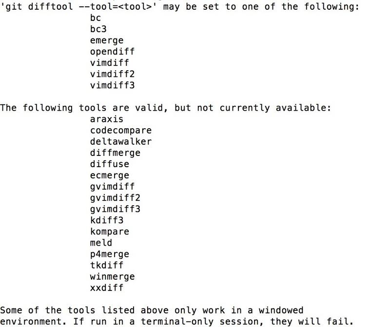
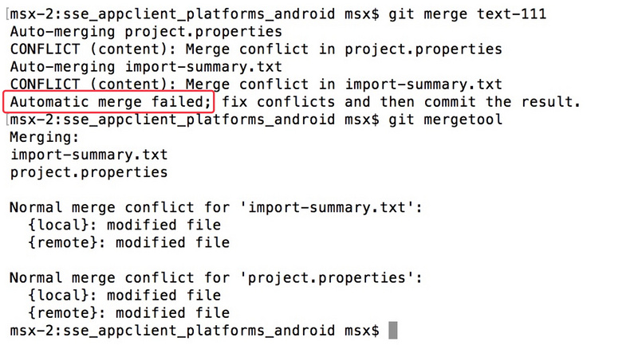

git 下的 mergetool 配置
在使用 git merge 命令合并分支遇到冲突的时候，虽然可以通过 git diff 来查看冲突的具体信息，并查找冲突依次解决，但是当冲突较多的时候寻找每个文件的冲突标记去解决可能会比较麻烦，git command 提供了
difftool 和 mergetool 命令来支持通过其他软件输出 diff 的分析结果以及进行文件的 merge，下面仅以大家常用的比较工具 Beyond Compare 为例，简述 difftool 和 mergetool 的配置
1.查看当前系统支持的 merge 插件
git difftool --tool-help
git mergetool --tool-help
通过上面的命令可以查看当前系统可以使用的和支持的 git diff 或 git merge 插件，运行结果如图，git提供了对多种比较工具的支持

其中 bc3 即对应 Beyond Compare 版本3、4
2.difftool / mergetool 配置
依赖
macox 需要安装 bc 的命令行工具（在 bc 菜单中运行 Install Command Line Tools 即可）
配置
macox
difftool
git config --global diff.tool bc3
mergetool
git config --global merge.tool bc3 //将bc设置为默认mergetool
git config --global mergetool.bc3 trustExitCode true //设置退出bc时完成merge
windows
difftool
git config --global diff.tool bc3
git config --global difftool.bc3.path "bcomp.exe的路径"
mergetool
git config --global merge.tool bc3
git config --global mergetool.bc3.path "bcomp.exe的路径"
3.使用
提交 commit 后执行 git merge 如无冲突即自动合并，如果合并两个分支产生冲突无法自动完成 merge 时（如图）即可使用 git mergetool（前面设置了 bc 为默认 mergetool ）调起 Beyond Compare （如需运行其它比较工具 执行 git mergetool –tool=工具名 即可 例如 git mergetool –tool=opendiff ）

有多个文件的话会依次打开，随后使用Beyond Compare进行文件的merge保存即可（如图）

其中当前所在分支会作为local（左侧），merge的分支会作为remote（右侧）
difftool 的使用与 mergetool 类似 在 commit 之后 运行 git difftool 或者 git difftool+文件名 既可调起 Beyond Compare 来查看 diff 的分析结果
补充：
windows 如果出现虽然安装了bc 但是作为 mergetool 不可用的情况 可以通过修改用户目录下的 gitconfig 追加 difftool 和 mergetool 的配置
内容如下，mergetool 的名字可以自定，路径修改为本地 bcomp.exe 的路径即可
[diff]
tool = bc4
[difftool "bc4"]
cmd = \"c:/program files (x86)/beyond compare 4/bcomp.exe\" \"$LOCAL\" \"$REMOTE\"
[merge]
tool = bc4
[mergetool "bc4"]
cmd = \"c:/program files (x86)/beyond compare 4/bcomp.exe\" \"$LOCAL\" \"$REMOTE\" \"$BASE\" \"$MERGED\"
trustExitCode = true